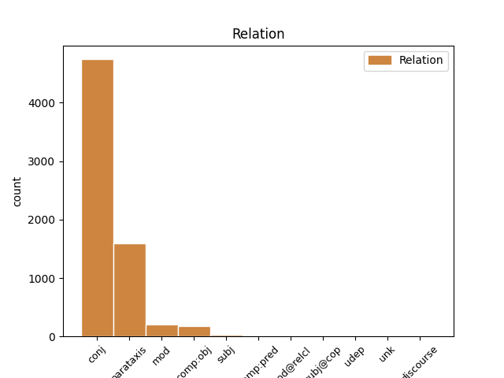
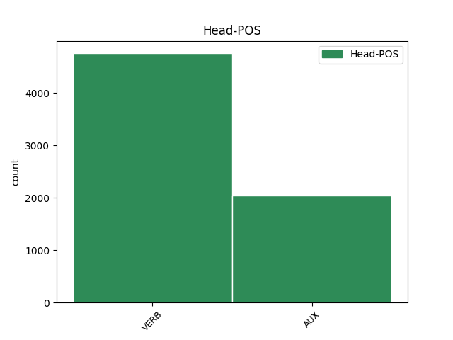
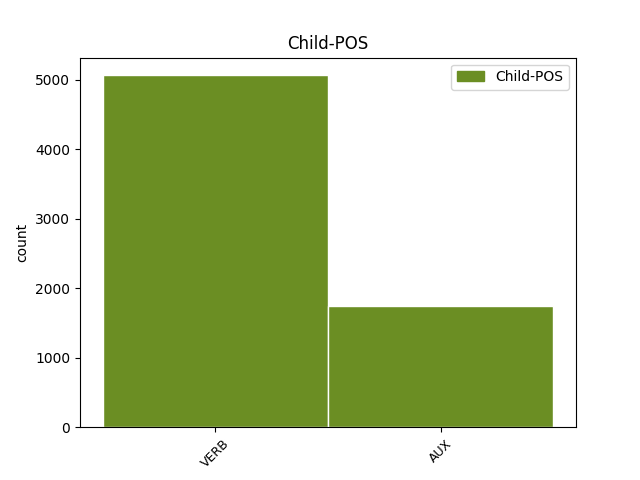

Distribution of features within this leaf



Agreement Rules sorted by frequency.
- When the dependent token is the conjunct(conj) of the head token,
1 vaeghõivatud _ _ _ _ 0 _ _ _
2 - _ _ _ _ 0 _ _ _
3 soovivad soovima VERB V Mood=Ind|Number=Plur|Person=3|Tense=Pres|VerbForm=Fin|Voice=Act 0 _ _ _
4 rohkem _ _ _ _ 0 _ _ _
5 töötada _ _ _ _ 0 _ _ _
6 ja _ _ _ _ 0 _ _ _
7 on olema AUX V Mood=Ind|Number=Plur|Person=3|Tense=Pres|VerbForm=Fin|Voice=Act 3 conj _ _
8 valmis _ _ _ _ 0 _ _ _
9 lisatööd _ _ _ _ 0 _ _ _
10 kohe _ _ _ _ 0 _ _ _
11 ( _ _ _ _ 0 _ _ _
12 kahe _ _ _ _ 0 _ _ _
13 nädala _ _ _ _ 0 _ _ _
14 jooksul _ _ _ _ 0 _ _ _
15 ) _ _ _ _ 0 _ _ _
16 vastu _ _ _ _ 0 _ _ _
17 võtma _ _ _ _ 0 _ _ _
1 Töö _ _ _ _ 0 _ _ _
2 " _ _ _ _ 0 _ _ _
3 koguhulk _ _ _ _ 0 _ _ _
4 " _ _ _ _ 0 _ _ _
5 on olema AUX V Mood=Ind|Number=Sing|Person=3|Tense=Pres|VerbForm=Fin|Voice=Act 0 _ _ _
6 vahemikus _ _ _ _ 0 _ _ _
7 1989-2001. _ _ _ _ 0 _ _ _
8 a. _ _ _ _ 0 _ _ _
9 vähenenud _ _ _ _ 0 _ _ _
10 mitme _ _ _ _ 0 _ _ _
11 ETU _ _ _ _ 0 _ _ _
12 näitaja _ _ _ _ 0 _ _ _
13 alusel _ _ _ _ 0 _ _ _
14 nagu _ _ _ _ 0 _ _ _
15 näiteks _ _ _ _ 0 _ _ _
16 keskmine _ _ _ _ 0 _ _ _
17 nädala _ _ _ _ 0 _ _ _
18 töötundide _ _ _ _ 0 _ _ _
19 arv _ _ _ _ 0 _ _ _
20 ja _ _ _ _ 0 _ _ _
21 kõrvaltööde _ _ _ _ 0 _ _ _
22 osakaal _ _ _ _ 0 _ _ _
23 ; _ _ _ _ 0 _ _ _
24 inimeste _ _ _ _ 0 _ _ _
25 osakaal _ _ _ _ 0 _ _ _
26 , _ _ _ _ 0 _ _ _
27 kes _ _ _ _ 0 _ _ _
28 soovivad _ _ _ _ 0 _ _ _
29 rohkem _ _ _ _ 0 _ _ _
30 töötada _ _ _ _ 0 _ _ _
31 kasvab kasvama VERB V Mood=Ind|Number=Sing|Person=3|Tense=Pres|VerbForm=Fin|Voice=Act 5 parataxis _ _
32 nii _ _ _ _ 0 _ _ _
33 nagu _ _ _ _ 0 _ _ _
34 ka _ _ _ _ 0 _ _ _
35 uue _ _ _ _ 0 _ _ _
36 ja _ _ _ _ 0 _ _ _
37 lisatöö _ _ _ _ 0 _ _ _
38 otsijate _ _ _ _ 0 _ _ _
39 osakaal _ _ _ _ 0 _ _ _
40 ning _ _ _ _ 0 _ _ _
41 inimeste _ _ _ _ 0 _ _ _
42 osakaal _ _ _ _ 0 _ _ _
43 , _ _ _ _ 0 _ _ _
44 kes _ _ _ _ 0 _ _ _
45 töötavad _ _ _ _ 0 _ _ _
46 osaajaga _ _ _ _ 0 _ _ _
47 , _ _ _ _ 0 _ _ _
48 kuna _ _ _ _ 0 _ _ _
49 ei _ _ _ _ 0 _ _ _
50 leia _ _ _ _ 0 _ _ _
51 täisaja _ _ _ _ 0 _ _ _
52 tööd _ _ _ _ 0 _ _ _
53 . _ _ _ _ 0 _ _ _
1 On olema AUX V Mood=Ind|Number=Sing|Person=3|Tense=Pres|VerbForm=Fin|Voice=Act 0 _ _ _
2 küllaltki _ _ _ _ 0 _ _ _
3 tõenäoline _ _ _ _ 0 _ _ _
4 , _ _ _ _ 0 _ _ _
5 eriti _ _ _ _ 0 _ _ _
6 kui _ _ _ _ 0 _ _ _
7 eeldame eeldama VERB V Mood=Ind|Number=Plur|Person=1|Tense=Pres|VerbForm=Fin|Voice=Act 1 mod _ SpaceAfter=No
8 , _ _ _ _ 0 _ _ _
9 et _ _ _ _ 0 _ _ _
10 majanduse _ _ _ _ 0 _ _ _
11 tsükliliste _ _ _ _ 0 _ _ _
12 muutuste _ _ _ _ 0 _ _ _
13 komponendi _ _ _ _ 0 _ _ _
14 mõju _ _ _ _ 0 _ _ _
15 tööhõivele _ _ _ _ 0 _ _ _
16 võib _ _ _ _ 0 _ _ _
17 edaspidi _ _ _ _ 0 _ _ _
18 pigem _ _ _ _ 0 _ _ _
19 kasvada _ _ _ _ 0 _ _ _
20 , _ _ _ _ 0 _ _ _
21 et _ _ _ _ 0 _ _ _
22 ka _ _ _ _ 0 _ _ _
23 mittetraditsiooniliste _ _ _ _ 0 _ _ _
24 tööviiside _ _ _ _ 0 _ _ _
25 ja _ _ _ _ 0 _ _ _
26 -vormide _ _ _ _ 0 _ _ _
27 osa _ _ _ _ 0 _ _ _
28 tööhõives _ _ _ _ 0 _ _ _
29 kasvab _ _ _ _ 0 _ _ _
30 . _ _ _ _ 0 _ _ _
1 See _ _ _ _ 0 _ _ _
2 näitab näitama VERB V Mood=Ind|Number=Sing|Person=3|Tense=Pres|VerbForm=Fin|Voice=Act 0 _ _ _
3 , _ _ _ _ 0 _ _ _
4 kui _ _ _ _ 0 _ _ _
5 olulist _ _ _ _ 0 _ _ _
6 rolli _ _ _ _ 0 _ _ _
7 mängivad mängima VERB V Mood=Ind|Number=Plur|Person=3|Tense=Pres|VerbForm=Fin|Voice=Act 2 comp:obj _ _
8 edukad _ _ _ _ 0 _ _ _
9 ettevõtted _ _ _ _ 0 _ _ _
10 uute _ _ _ _ 0 _ _ _
11 töökohtade _ _ _ _ 0 _ _ _
12 loomisel _ _ _ _ 0 _ _ _
13 ( _ _ _ _ 0 _ _ _
14 Lewis _ _ _ _ 0 _ _ _
15 , _ _ _ _ 0 _ _ _
16 1995 _ _ _ _ 0 _ _ _
17 ) _ _ _ _ 0 _ _ _
18 . _ _ _ _ 0 _ _ _
1 Sageli _ _ _ _ 0 _ _ _
2 võivad _ _ _ _ 0 _ _ _
3 invasiiv-diagnostilisel _ _ _ _ 0 _ _ _
4 eesmärgil _ _ _ _ 0 _ _ _
5 teostatava _ _ _ _ 0 _ _ _
6 sõlmede _ _ _ _ 0 _ _ _
7 eemaldamise _ _ _ _ 0 _ _ _
8 järel _ _ _ _ 0 _ _ _
9 amüloidoosikolded _ _ _ _ 0 _ _ _
10 taastekkida _ _ _ _ 0 _ _ _
11 , _ _ _ _ 0 _ _ _
12 seejuures _ _ _ _ 0 _ _ _
13 on olema AUX V Mood=Ind|Number=Sing|Person=3|Tense=Pres|VerbForm=Fin|Voice=Act 0 _ _ _
14 teadmata _ _ _ _ 0 _ _ _
15 , _ _ _ _ 0 _ _ _
16 kas _ _ _ _ 0 _ _ _
17 põhjuseks _ _ _ _ 0 _ _ _
18 on olema AUX V Mood=Ind|Number=Sing|Person=3|Tense=Pres|VerbForm=Fin|Voice=Act 13 subj _ _
19 ebatäielik _ _ _ _ 0 _ _ _
20 resektsioon _ _ _ _ 0 _ _ _
21 või _ _ _ _ 0 _ _ _
22 areneb _ _ _ _ 0 _ _ _
23 haigus _ _ _ _ 0 _ _ _
24 ise _ _ _ _ 0 _ _ _
25 edasi _ _ _ _ 0 _ _ _
26 uute _ _ _ _ 0 _ _ _
27 sõlmede _ _ _ _ 0 _ _ _
28 moodustumisega _ _ _ _ 0 _ _ _
29 . _ _ _ _ 0 _ _ _
1 Astronoomid _ _ _ _ 0 _ _ _
2 peavad pidama VERB V Mood=Ind|Number=Plur|Person=3|Tense=Pres|VerbForm=Fin|Voice=Act 0 _ _ _
3 seda _ _ _ _ 0 _ _ _
4 Marsi _ _ _ _ 0 _ _ _
5 ja _ _ _ _ 0 _ _ _
6 Jupiteri _ _ _ _ 0 _ _ _
7 orbiidi _ _ _ _ 0 _ _ _
8 vahel _ _ _ _ 0 _ _ _
9 olnud _ _ _ _ 0 _ _ _
10 ühise _ _ _ _ 0 _ _ _
11 atmosfääriga _ _ _ _ 0 _ _ _
12 kaksikplaneediks _ _ _ _ 0 _ _ _
13 , _ _ _ _ 0 _ _ _
14 mis _ _ _ _ 0 _ _ _
15 lagunes lagunema VERB V Mood=Ind|Number=Sing|Person=3|Tense=Past|VerbForm=Fin|Voice=Act 2 mod@relcl _ _
16 juba _ _ _ _ 0 _ _ _
17 valmis _ _ _ _ 0 _ _ _
18 Maa _ _ _ _ 0 _ _ _
19 ajal _ _ _ _ 0 _ _ _
20 umbes _ _ _ _ 0 _ _ _
21 3.9 _ _ _ _ 0 _ _ _
22 miljardit _ _ _ _ 0 _ _ _
23 aastat _ _ _ _ 0 _ _ _
24 tagasi _ _ _ _ 0 _ _ _
25 . _ _ _ _ 0 _ _ _
1 Mittestatsionaarsuse _ _ _ _ 0 _ _ _
2 probleemi _ _ _ _ 0 _ _ _
3 toob tooma VERB V Mood=Ind|Number=Sing|Person=3|Tense=Pres|VerbForm=Fin|Voice=Act 0 _ _ _
4 kõige _ _ _ _ 0 _ _ _
5 selgemalt _ _ _ _ 0 _ _ _
6 välja _ _ _ _ 0 _ _ _
7 informatsiooni _ _ _ _ 0 _ _ _
8 vajamise _ _ _ _ 0 _ _ _
9 kiirus _ _ _ _ 0 _ _ _
10 - _ _ _ _ 0 _ _ _
11 eelmise _ _ _ _ 0 _ _ _
12 kuu _ _ _ _ 0 _ _ _
13 müügi- _ _ _ _ 0 _ _ _
14 või _ _ _ _ 0 _ _ _
15 mõõtmiste _ _ _ _ 0 _ _ _
16 tulemuste _ _ _ _ 0 _ _ _
17 analüüsi _ _ _ _ 0 _ _ _
18 täna _ _ _ _ 0 _ _ _
19 kätte _ _ _ _ 0 _ _ _
20 saada _ _ _ _ 0 _ _ _
21 võib võima AUX V Mood=Ind|Number=Sing|Person=3|Tense=Pres|VerbForm=Fin|Voice=Act 3 comp:pred _ _
22 olla _ _ _ _ 0 _ _ _
23 juba _ _ _ _ 0 _ _ _
24 liiga _ _ _ _ 0 _ _ _
25 hilja _ _ _ _ 0 _ _ _
26 . _ _ _ _ 0 _ _ _
1 eeldame _ _ _ _ 0 _ _ _
2 , _ _ _ _ 0 _ _ _
3 et _ _ _ _ 0 _ _ _
4 allhanke _ _ _ _ 0 _ _ _
5 tegijad _ _ _ _ 0 _ _ _
6 saavad _ _ _ _ 0 _ _ _
7 varsti _ _ _ _ 0 _ _ _
8 hoo _ _ _ _ 0 _ _ _
9 sisse _ _ _ _ 0 _ _ _
10 ; _ _ _ _ 0 _ _ _
11 samas _ _ _ _ 0 _ _ _
12 on olema AUX V Mood=Ind|Number=Sing|Person=3|Tense=Pres|VerbForm=Fin|Voice=Act 0 _ _ _
13 kahtlane _ _ _ _ 0 _ _ _
14 , _ _ _ _ 0 _ _ _
15 kas _ _ _ _ 0 _ _ _
16 see _ _ _ _ 0 _ _ _
17 oluliselt _ _ _ _ 0 _ _ _
18 töökohtade _ _ _ _ 0 _ _ _
19 juurdekasvu _ _ _ _ 0 _ _ _
20 tekitab tekitama VERB V Mood=Ind|Number=Sing|Person=3|Tense=Pres|VerbForm=Fin|Voice=Act 12 subj@cop _ SpaceAfter=No
21 , _ _ _ _ 0 _ _ _
22 kuna _ _ _ _ 0 _ _ _
23 eriti _ _ _ _ 0 _ _ _
24 kõrgtehnoloogia _ _ _ _ 0 _ _ _
25 sektori _ _ _ _ 0 _ _ _
26 allhanke _ _ _ _ 0 _ _ _
27 osa _ _ _ _ 0 _ _ _
28 üldises _ _ _ _ 0 _ _ _
29 tööhõives _ _ _ _ 0 _ _ _
30 on _ _ _ _ 0 _ _ _
31 perifeerne _ _ _ _ 0 _ _ _
32 oletame _ _ _ _ 0 _ _ _
33 , _ _ _ _ 0 _ _ _
34 et _ _ _ _ 0 _ _ _
35 " _ _ _ _ 0 _ _ _
36 otseeksportijad _ _ _ _ 0 _ _ _
37 " _ _ _ _ 0 _ _ _
38 ( _ _ _ _ 0 _ _ _
39 mitte _ _ _ _ 0 _ _ _
40 -allhanke _ _ _ _ 0 _ _ _
41 tegijad _ _ _ _ 0 _ _ _
42 ) _ _ _ _ 0 _ _ _
43 jätkavad _ _ _ _ 0 _ _ _
44 enam-vähem _ _ _ _ 0 _ _ _
45 normaalselt _ _ _ _ 0 _ _ _
46 . _ _ _ _ 0 _ _ _
1 Lii _ _ _ _ 0 _ _ _
2 Undi _ _ _ _ 0 _ _ _
3 selgitused _ _ _ _ 0 _ _ _
4 riietuse _ _ _ _ 0 _ _ _
5 läbi _ _ _ _ 0 _ _ _
6 saadetavatest _ _ _ _ 0 _ _ _
7 alateadvusele _ _ _ _ 0 _ _ _
8 suunatud _ _ _ _ 0 _ _ _
9 signaalidest _ _ _ _ 0 _ _ _
10 on olema AUX V Mood=Ind|Number=Sing|Person=3|Tense=Pres|VerbForm=Fin|Voice=Act 0 _ _ _
11 muidugi _ _ _ _ 0 _ _ _
12 huvitavad _ _ _ _ 0 _ _ _
13 , _ _ _ _ 0 _ _ _
14 aga _ _ _ _ 0 _ _ _
15 vaevalt _ _ _ _ 0 _ _ _
16 on olema AUX V Mood=Ind|Number=Sing|Person=3|Tense=Pres|VerbForm=Fin|Voice=Act 10 udep _ _
17 nendel _ _ _ _ 0 _ _ _
18 nii _ _ _ _ 0 _ _ _
19 ühene _ _ _ _ 0 _ _ _
20 tõlgendus _ _ _ _ 0 _ _ _
21 . _ _ _ _ 0 _ _ _
1 Või _ _ _ _ 0 _ _ _
2 näidati _ _ _ _ 0 _ _ _
3 võimalike _ _ _ _ 0 _ _ _
4 eluteede _ _ _ _ 0 _ _ _
5 mõttetust _ _ _ _ 0 _ _ _
6 , _ _ _ _ 0 _ _ _
7 see _ _ _ _ 0 _ _ _
8 tähendab tähendama VERB V Mood=Ind|Number=Sing|Person=3|Tense=Pres|VerbForm=Fin|Voice=Act 0 _ _ _
9 õpetati õpetama VERB V Mood=Ind|Tense=Past|VerbForm=Fin|Voice=Pass 8 unk _ _
10 mitte _ _ _ _ 0 _ _ _
11 otsima _ _ _ _ 0 _ _ _
12 unistuste _ _ _ _ 0 _ _ _
13 saatust _ _ _ _ 0 _ _ _
14 , _ _ _ _ 0 _ _ _
15 see _ _ _ _ 0 _ _ _
16 tähendab _ _ _ _ 0 _ _ _
17 leppima _ _ _ _ 0 _ _ _
18 olemasolevaga _ _ _ _ 0 _ _ _
19 ? _ _ _ _ 0 _ _ _
Disagree Examples:
1 Ma _ _ _ _ 0 _ _ _
2 oleks olema AUX V Mood=Cnd|Tense=Pres|VerbForm=Fin|Voice=Act 0 _ _ _
3 pidanud _ _ _ _ 0 _ _ _
4 esimesena _ _ _ _ 0 _ _ _
5 lööma _ _ _ _ 0 _ _ _
6 , _ _ _ _ 0 _ _ _
7 aga _ _ _ _ 0 _ _ _
8 jäin jääma VERB V Mood=Ind|Number=Sing|Person=1|Tense=Past|VerbForm=Fin|Voice=Act 2 conj _ _
9 hiljaks _ _ _ _ 0 _ _ _
10 . _ _ _ _ 0 _ _ _
1 Alalhoidlikumad _ _ _ _ 0 _ _ _
2 leidsid _ _ _ _ 0 _ _ _
3 , _ _ _ _ 0 _ _ _
4 et _ _ _ _ 0 _ _ _
5 firma _ _ _ _ 0 _ _ _
6 laenukoormus _ _ _ _ 0 _ _ _
7 on olema AUX V Mood=Ind|Number=Sing|Person=3|Tense=Pres|VerbForm=Fin|Voice=Act 0 _ _ _
8 niigi _ _ _ _ 0 _ _ _
9 suur _ _ _ _ 0 _ _ _
10 ja _ _ _ _ 0 _ _ _
11 entusiastlikust _ _ _ _ 0 _ _ _
12 Perest _ _ _ _ 0 _ _ _
13 tuleks tulema VERB V Mood=Cnd|Tense=Pres|VerbForm=Fin|Voice=Act 7 conj _ _
14 vabaneda _ _ _ _ 0 _ _ _
15 ning _ _ _ _ 0 _ _ _
16 veehinna _ _ _ _ 0 _ _ _
17 edasine _ _ _ _ 0 _ _ _
18 tõus _ _ _ _ 0 _ _ _
19 tuleb _ _ _ _ 0 _ _ _
20 peatada _ _ _ _ 0 _ _ _
21 . _ _ _ _ 0 _ _ _
1 Alalhoidlikumad _ _ _ _ 0 _ _ _
2 leidsid _ _ _ _ 0 _ _ _
3 , _ _ _ _ 0 _ _ _
4 et _ _ _ _ 0 _ _ _
5 firma _ _ _ _ 0 _ _ _
6 laenukoormus _ _ _ _ 0 _ _ _
7 on _ _ _ _ 0 _ _ _
8 niigi _ _ _ _ 0 _ _ _
9 suur _ _ _ _ 0 _ _ _
10 ja _ _ _ _ 0 _ _ _
11 entusiastlikust _ _ _ _ 0 _ _ _
12 Perest _ _ _ _ 0 _ _ _
13 tuleks tulema VERB V Mood=Cnd|Tense=Pres|VerbForm=Fin|Voice=Act 0 _ _ _
14 vabaneda _ _ _ _ 0 _ _ _
15 ning _ _ _ _ 0 _ _ _
16 veehinna _ _ _ _ 0 _ _ _
17 edasine _ _ _ _ 0 _ _ _
18 tõus _ _ _ _ 0 _ _ _
19 tuleb tulema VERB V Mood=Ind|Number=Sing|Person=3|Tense=Pres|VerbForm=Fin|Voice=Act 13 conj _ _
20 peatada _ _ _ _ 0 _ _ _
21 . _ _ _ _ 0 _ _ _
1 Eesti _ _ _ _ 0 _ _ _
2 on olema AUX V Mood=Ind|Number=Sing|Person=3|Tense=Pres|VerbForm=Fin|Voice=Act 0 _ _ _
3 juba _ _ _ _ 0 _ _ _
4 ammu _ _ _ _ 0 _ _ _
5 üleerutatud _ _ _ _ 0 _ _ _
6 seisundis _ _ _ _ 0 _ _ _
7 : _ _ _ _ 0 _ _ _
8 lugege lugema VERB V Mood=Imp|Number=Plur|Person=2|Tense=Pres|VerbForm=Fin|Voice=Act 2 parataxis _ _
9 päevauudiseid _ _ _ _ 0 _ _ _
10 ja _ _ _ _ 0 _ _ _
11 teil _ _ _ _ 0 _ _ _
12 tuleb _ _ _ _ 0 _ _ _
13 tahtmine _ _ _ _ 0 _ _ _
14 peast _ _ _ _ 0 _ _ _
15 kinni _ _ _ _ 0 _ _ _
16 haarata _ _ _ _ 0 _ _ _
17 ning _ _ _ _ 0 _ _ _
18 küsida _ _ _ _ 0 _ _ _
19 : _ _ _ _ 0 _ _ _
20 mis _ _ _ _ 0 _ _ _
21 toimub _ _ _ _ 0 _ _ _
22 ? _ _ _ _ 0 _ _ _
1 Eesti _ _ _ _ 0 _ _ _
2 on _ _ _ _ 0 _ _ _
3 juba _ _ _ _ 0 _ _ _
4 ammu _ _ _ _ 0 _ _ _
5 üleerutatud _ _ _ _ 0 _ _ _
6 seisundis _ _ _ _ 0 _ _ _
7 : _ _ _ _ 0 _ _ _
8 lugege lugema VERB V Mood=Imp|Number=Plur|Person=2|Tense=Pres|VerbForm=Fin|Voice=Act 0 _ _ _
9 päevauudiseid _ _ _ _ 0 _ _ _
10 ja _ _ _ _ 0 _ _ _
11 teil _ _ _ _ 0 _ _ _
12 tuleb tulema VERB V Mood=Ind|Number=Sing|Person=3|Tense=Pres|VerbForm=Fin|Voice=Act 8 conj _ _
13 tahtmine _ _ _ _ 0 _ _ _
14 peast _ _ _ _ 0 _ _ _
15 kinni _ _ _ _ 0 _ _ _
16 haarata _ _ _ _ 0 _ _ _
17 ning _ _ _ _ 0 _ _ _
18 küsida _ _ _ _ 0 _ _ _
19 : _ _ _ _ 0 _ _ _
20 mis _ _ _ _ 0 _ _ _
21 toimub _ _ _ _ 0 _ _ _
22 ? _ _ _ _ 0 _ _ _